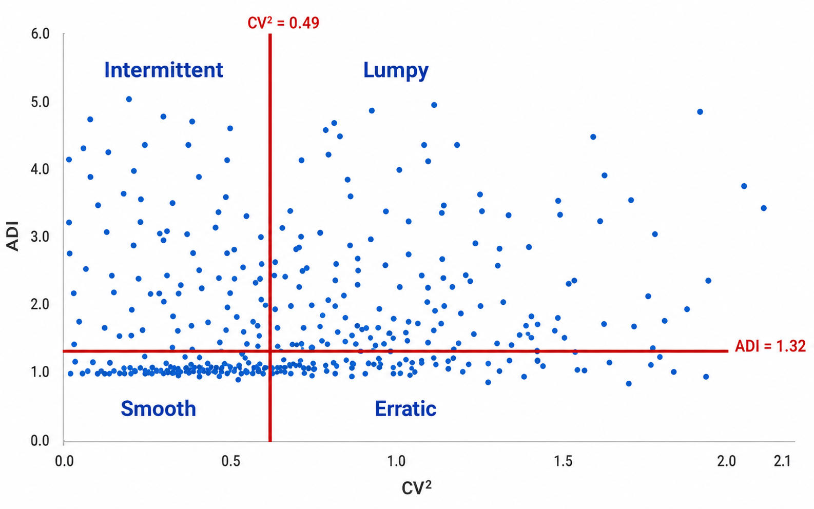
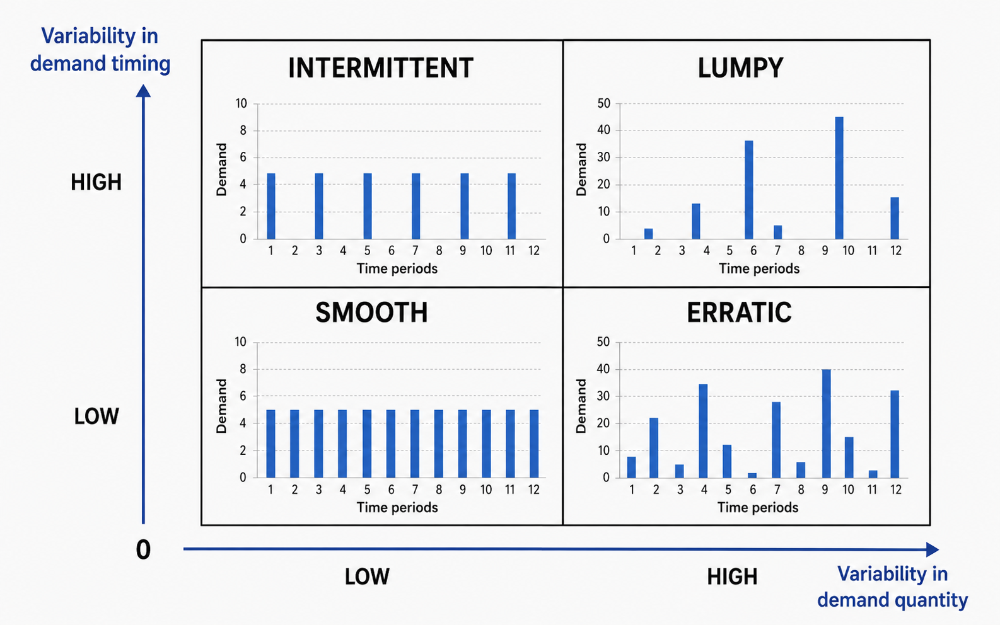

Classifies spare parts demand by occurrence frequency and volume stability to help shipowners build more informed forecasting, procurement, and inventory strategies.
This classification addresses a core problem with spare parts: demand is discontinuous, and simple averages can be misleading.
Many spare parts see no demand for long periods, yet when they are needed, the impact on operations can be significant.
Researchers therefore use ADI (Average Demand Interval) and CV² (squared coefficient of variation of demand size) to identify demand patterns and help select appropriate forecasting methods, inventory levels, and procurement strategies.
Using ADI and CV², items can be grouped into four demand types:
SmoothSmooth demand
ErraticErratic demand
IntermittentIntermittent demand
LumpyLumpy demand
This method is commonly applied to ship spare parts, maintenance materials, low-frequency consumables, and slow-moving inventory.
The goal is to support better choices for forecasting methods, inventory levels, and procurement strategies.
02Two key metrics: ADI and CV²
ADI: Average Demand Interval
Represents how often, on average, a non-zero demand occurs.
ADI =
TN+
T: total observation periods | N+: periods with demand
Example: if demand occurs in only 6 of 24 months, ADI = 24 ÷ 6 = 4 — on average, one demand event every 4 months.
CV²: Squared Coefficient of Variation
Measures how much demand size fluctuates when demand does occur.
CV² =
(
σzμz
)²
σz: standard deviation of non-zero demand | μz: mean of non-zero demand
CV² is low when quantities are consistently around 1–2 units; it is high when quantities swing between, say, 1 and 20 units.
Demand classification analysis

This chart classifies spare parts demand into four types using ADI (Average Demand Interval) and CV² (demand size variation).
Each blue dot represents one spare part; the red lines mark commonly used classification thresholds.
The result helps shipowners choose appropriate forecasting methods, inventory levels, and procurement strategies.
Place the image at ../assets/images/sbc/01-chart-paradigm.png, or update the src above to point to your file.
Quadrant
Meaning
Smooth demand
Demand occurs frequently with stable quantities
Erratic demand
Demand occurs frequently but quantities vary widely
Intermittent demand
Demand occurs infrequently but quantities are relatively stable
Lumpy demand
Demand occurs infrequently and quantities are unstable
03Four demand quadrants

Place the quadrant image at ../assets/images/sbc/03-quadrants.png, or update the src above to point to your file.
Common cut-off values
In practice and research, the following thresholds are commonly used to split demand into four types:
Demand occurrence intervalADI = 1.32
Demand size variationCV² = 0.49
A higher ADI means demand occurs less often; a higher CV² means each demand event varies more in size. For ship spare parts, this helps determine whether conventional average-demand management is appropriate.
Demand type
ADI
CV²
Meaning
Ship spare parts examples
Smooth demandSmooth demand
Low
Low
Demand occurs frequently with stable quantities.
Common filters, O-rings, cleaning consumables
Erratic demandErratic demand
Low
High
Demand occurs frequently but quantities vary widely.
Maintenance bolts, gaskets, oil seals
Intermittent demandIntermittent demand
High
Low
Demand occurs infrequently but quantities are relatively stable.
Specific sensors, solenoid valves, relays
Lumpy demandLumpy demand
High
High
Demand occurs infrequently and quantities are highly unstable.
Special main-engine spares, pump assemblies, critical spare kits
04Management priorities by type
Smooth demand | Standard forecasting applies
This pattern resembles conventional inventory items. Moving averages, exponential smoothing, reorder points, or simple safety-stock logic often work well.
Typical shipboard items: daily consumables or scheduled maintenance supplies.
Strategy
Description
Automatic replenishment
Generate purchase suggestions when stock falls below minimum
Batch procurement
Reduce unit cost and freight through bulk orders
Standard stock levels
Set standard min/max inventory per vessel
Supplier consolidation
Reduce fragmented suppliers to improve procurement efficiency
Erratic demand | Focus on quantity volatility
These items are requested often, but quantities swing widely. Relying on average demand alone can underestimate peak requirements.
Strategy
Description
Dynamic safety stock
Adjust safety stock by volatility, not averages alone
Flag exceptional demand
Separate major overhauls, incidents, and project demand from routine consumption
Fast-supply agreements
Establish quick quote and delivery mechanisms for frequently used but volatile items
Fleet-wide procurement
Pool orders across vessels when multiple ships use the same items
Periodic consumption review
Review quarterly or semi-annually for equipment aging or repeat failures
Intermittent demand | Averages can mislead
When an item is rarely used but a stockout would cause downtime, delays, or class/PSC risk, maintain a minimum strategic safety stock.
Strategy
Description
Minimum strategic stock
Keep a baseline quantity even when historical demand is low
Critical spare parts list
Have the technical department confirm criticality
Lead-time-based stocking
Longer lead times require more advance stocking
Verify supplier capability
Confirm availability with manufacturers/agents before an urgent need arises
Alternates and equivalents list
Reduce single-part-number supply risk
Fleet shared inventory
Hold high-value items at shore bases rather than on every vessel
Examples: main-engine control sensors, generator protection relays, boiler control components, separator-specific modules, steering gear control parts, automation PCB boards.
Lumpy demand | Favor risk-based management
These items combine infrequent occurrence with unstable quantities; statistical forecasting alone is often insufficient.
This is the category shipowners should scrutinize most closely.
Even when demand is rare, if a stockout could stop the vessel, disable the main engine or generator, affect steering gear, or create class or PSC exposure, manage by risk rather than forecast alone.
Strategy
Description
Critical spare parts policy
Define which lumpy items require strategic stock
Minimum strategic safety stock
Retain baseline quantity even when historical demand is low
Shore-based central stock
Hold high-value items at company warehouses to support the fleet
Fleet shared inventory
Share high-value, low-frequency spares across same-type vessels/equipment
Consignment stock
Have suppliers hold inventory; pay only after use
Repair exchange program
Use exchange units to shorten downtime
Framework agreements
Agree price, lead time, and supply priority with manufacturers or agents
Alternate parts confirmation
Pre-confirm equivalent or interchangeable spares
05Implications for spare parts supply chain management
Q1
Can this spare part be forecast with standard demand methods?
Smooth: usually yes
Intermittent / Lumpy: usually not with simple averages alone
Q2
Forecast-driven or risk-driven?
Smooth / Erratic: can lean forecast-driven
Intermittent / Lumpy: critical spares should lean risk-driven
Q3
Should safety stock follow historical demand alone?
For lumpy critical spares, history may understate actual risk. Factor in criticality, lead time, off-hire exposure, and supply stability.
06Recommended procurement strategies for ship spares
Classification combination
Recommended procurement strategy
↻Smooth + low cost
Use automatic replenishment and batch procurement to reduce unit cost.
🛡Smooth + high criticality
Use min–max inventory management and stable supply agreements with vendors.
📦Intermittent + low criticality
Buy to demand; avoid overstocking and obsolete inventory.
⚓Intermittent + high criticality
Maintain minimum strategic safety stock to reduce operational risk from stockouts.
↯Lumpy + low criticality
Generally do not stock; keep only a small buffer when lead times are very long or supply is unstable.
★Lumpy + high criticality
Establish a critical spare parts policy; evaluate shared inventory, consignment, or repair exchange.
⏱High cost + long lead time
Use framework agreements or call-off contracts to balance lead time and cash flow.
⚠Obsolescence or discontinuation risk
Plan last-time buys, confirm alternates, and manage phase-out.
07Practical considerations
Do not treat ADI = 1.32 and CV² = 0.49 as absolute rules
These values are often cited as fixed standards, but they are better understood as boundaries for choosing forecasting methods—not universal cut-offs for every industry.
In practice, do not base inventory strategy on SBC classification alone. Also consider:
Service level
Lead time
Criticality
Stockout cost
Obsolescence or discontinuation risk
Supplier reliability
Vessel off-hire or lay-up risk
Do not use price to dismiss critical spares
Item price should not change how you classify demand, nor should it justify skipping a critical spare.
For shipowners, the first question is whether a spare is operationally, maintenance, or safety-critical; if it is required, plan how to obtain it.
Cost belongs in procurement optimization—onboard stock vs. shore pooling, consignment, framework agreements, or repair exchange—not in downgrading necessary spares.
Classify demand without regard to price; decide stocking by risk; optimize procurement by cost.
✅
In one sentence
SBC demand classification helps answer whether a spare part’s demand can be forecast reliably; the final inventory decision still requires criticality, lead time, off-hire risk, and supplier reliability.
These are Reay’s study notes on applying SBC demand classification to spare parts forecasting, procurement, and inventory management. If you spot an error, please contact me so the material can be improved: ReayHuang@gmail.com